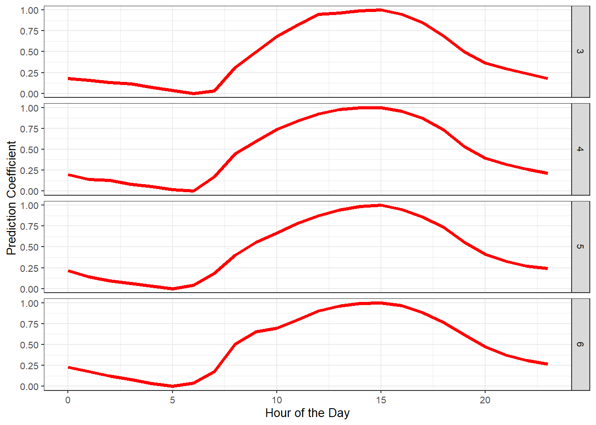

7 Chapter 8 — Making hourly temperatures
In this chapter, we will explore how to create hourly temperature data
from daily records using the chillR package.
We will use both idealized and empirical temperature curves.
7.1 Exercise 1
Choose a location of interest, find out its latitude and produce plots of daily sunrise, sunset and daylength
We start by exploring how daylength varies throughout the year.
Here, we use Edinburgh, Scotland (latitude = 55.95) as our example location.
The function daylength() from the chillR package calculates sunrise, sunset, and daylength for every day of the year.
library(chillR)
library(ggplot2)
library(tidyr)
latitude <- 55.95
Days <- chillR::daylength(latitude = 55.95, JDay = 1:365)
Days_df <-
data.frame(
JDay = 1:365,
Sunrise = Days$Sunrise,
Sunset = Days$Sunset,
Daylength = Days$Daylength
)
Days_df <- pivot_longer(Days_df,cols=c(Sunrise:Daylength))
ggplot(Days_df, aes(JDay, value)) +
geom_line(lwd = 1.5, col = "darkgreen") +
facet_grid(cols = vars(name)) +
ylab("Time of Day / Daylength (Hours)") +
xlab("Julian Day") +
ggtitle("Sunrise, Sunset and Daylength Over the Year") +
theme_bw(base_size = 16)
7.2 Exercise 2
Produce an hourly dataset, based on idealized daily curves, for the KA_weather dataset (included in chillR)
Next, we generate an idealized hourly temperature dataset for the KA_weather dataset, included in chillR. To do this, we use the stack_hourly_temps()function. The daylength plays an important role in determining the daily temperature curve. Longer days tend to have higher temperatures. The function stack_hourly_temps() uses the minimum and maximum daily temperatures together with latitude to generate idealized hourly temperatures.
latitude <- 55.95
KA_hourly <- stack_hourly_temps(KA_weather, latitude = latitude)$hourtemps
head(KA_hourly, 24)## Year Month Day Tmax Tmin JDay Hour Temp
## 1 1998 1 1 8.2 5.1 1 0 5.100000
## 4535 1998 1 1 8.2 5.1 1 1 5.100000
## 9069 1998 1 1 8.2 5.1 1 2 5.100000
## 13603 1998 1 1 8.2 5.1 1 3 5.100000
## 18137 1998 1 1 8.2 5.1 1 4 5.100000
## 22671 1998 1 1 8.2 5.1 1 5 5.100000
## 27205 1998 1 1 8.2 5.1 1 6 5.100000
## 31739 1998 1 1 8.2 5.1 1 7 5.100000
## 36273 1998 1 1 8.2 5.1 1 8 5.100000
## 40807 1998 1 1 8.2 5.1 1 9 5.568044
## 45341 1998 1 1 8.2 5.1 1 10 6.407520
## 49875 1998 1 1 8.2 5.1 1 11 7.142357
## 54409 1998 1 1 8.2 5.1 1 12 7.713744
## 58943 1998 1 1 8.2 5.1 1 13 8.075954
## 63477 1998 1 1 8.2 5.1 1 14 8.200000
## 68011 1998 1 1 8.2 5.1 1 15 8.075954
## 72545 1998 1 1 8.2 5.1 1 16 7.524906
## 77079 1998 1 1 8.2 5.1 1 17 7.000388
## 81613 1998 1 1 8.2 5.1 1 18 6.657063
## 86147 1998 1 1 8.2 5.1 1 19 6.401394
## 90681 1998 1 1 8.2 5.1 1 20 6.197605
## 95215 1998 1 1 8.2 5.1 1 21 6.028151
## 99749 1998 1 1 8.2 5.1 1 22 5.883114
## 104283 1998 1 1 8.2 5.1 1 23 5.756336##Exercise 3 Produce empirical temperature curve parameters for the Winters_hours_gaps dataset, and use them to predict hourly values from daily temperatures (this is very similar to the example above, but please make sure you understand what’s going on)
Sometimes the idealized curve may not reflect real conditions (e.g., topographic or local effects).
In such cases, empirical curves are better.
They are based on real hourly observations.
We use the Winters_hours_gaps dataset to illustrate this.
empi_curve <- Empirical_daily_temperature_curve(Winters_hours_gaps)
ggplot(data = empi_curve[1:96, ], aes(Hour, Prediction_coefficient)) +
geom_line(lwd = 1.3, col = "red") +
facet_grid(rows = vars(Month)) +
xlab("Hour of the Day") +
ylab("Prediction Coefficient") +
theme_bw(base_size = 10)
Winters_daily <- make_all_day_table(Winters_hours_gaps, input_timestep = "hour")
Winters_emp_hourly <- Empirical_hourly_temperatures(Winters_daily, empi_curve)
head(Winters_emp_hourly, 24)## DATE Year Month Day Temp_gaps Tmin Tmean Tmax JDay Hour
## 1 2008-03-03 12:00:00 2008 3 3 15.01593 7.92 15.01593 19.508 63 0
## 41 2008-03-03 12:00:00 2008 3 3 15.01593 7.92 15.01593 19.508 63 1
## 69 2008-03-03 12:00:00 2008 3 3 15.01593 7.92 15.01593 19.508 63 2
## 91 2008-03-03 12:00:00 2008 3 3 15.01593 7.92 15.01593 19.508 63 3
## 133 2008-03-03 12:00:00 2008 3 3 15.01593 7.92 15.01593 19.508 63 4
## 151 2008-03-03 12:00:00 2008 3 3 15.01593 7.92 15.01593 19.508 63 5
## 183 2008-03-03 12:00:00 2008 3 3 15.01593 7.92 15.01593 19.508 63 6
## 207 2008-03-03 12:00:00 2008 3 3 15.01593 7.92 15.01593 19.508 63 7
## 235 2008-03-03 12:00:00 2008 3 3 15.01593 7.92 15.01593 19.508 63 8
## 273 2008-03-03 12:00:00 2008 3 3 15.01593 7.92 15.01593 19.508 63 9
## 301 2008-03-03 12:00:00 2008 3 3 15.01593 7.92 15.01593 19.508 63 10
## 320 2008-03-03 12:00:00 2008 3 3 15.01593 7.92 15.01593 19.508 63 11
## 351 2008-03-03 12:00:00 2008 3 3 15.01593 7.92 15.01593 19.508 63 12
## 378 2008-03-03 12:00:00 2008 3 3 15.01593 7.92 15.01593 19.508 63 13
## 413 2008-03-03 12:00:00 2008 3 3 15.01593 7.92 15.01593 19.508 63 14
## 444 2008-03-03 12:00:00 2008 3 3 15.01593 7.92 15.01593 19.508 63 15
## 481 2008-03-03 12:00:00 2008 3 3 15.01593 7.92 15.01593 19.508 63 16
## 499 2008-03-03 12:00:00 2008 3 3 15.01593 7.92 15.01593 19.508 63 17
## 538 2008-03-03 12:00:00 2008 3 3 15.01593 7.92 15.01593 19.508 63 18
## 568 2008-03-03 12:00:00 2008 3 3 15.01593 7.92 15.01593 19.508 63 19
## 598 2008-03-03 12:00:00 2008 3 3 15.01593 7.92 15.01593 19.508 63 20
## 612 2008-03-03 12:00:00 2008 3 3 15.01593 7.92 15.01593 19.508 63 21
## 654 2008-03-03 12:00:00 2008 3 3 15.01593 7.92 15.01593 19.508 63 22
## 683 2008-03-03 12:00:00 2008 3 3 15.01593 7.92 15.01593 19.508 63 23
## Temp
## 1 9.976706
## 41 9.716943
## 69 9.409812
## 91 9.247518
## 133 8.726599
## 151 8.313509
## 183 7.920000
## 207 8.282838
## 235 11.537726
## 273 13.659805
## 301 15.822638
## 320 17.453938
## 351 18.936122
## 378 19.117026
## 413 19.410656
## 444 19.508000
## 481 18.917381
## 499 17.750214
## 538 15.874616
## 568 13.650746
## 598 12.134141
## 612 11.364391
## 654 10.655172
## 683 9.999817